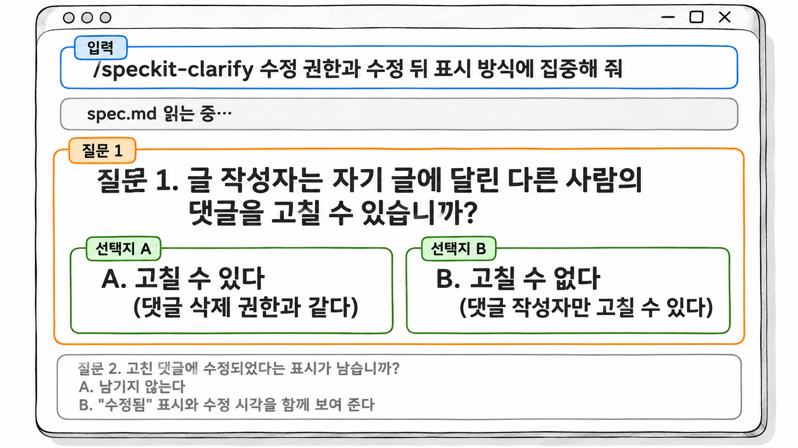
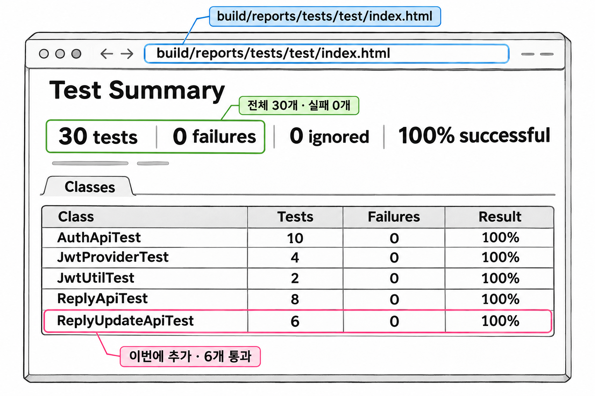

14장. 댓글 수정 기능 추가하기
이 장에서는 1장부터 13장까지 배운 것을 한 번에 씁니다. 9장에서 댓글 기능을 만들 때 스펙의 범위 밖으로 뺐던 댓글 수정을 블로그 API에 추가합니다. 앞 장들에서는 단계마다 설명을 먼저 들었습니다. 이 장에서는 수강생이 단계를 직접 밟습니다. 원고는 입력할 문장과 검토할 지점, 결과를 맞춰 볼 기준만 보여 줍니다.
1. 실습 준비와 보존 모델 정하기
이번에 받은 요구는 다음과 같습니다.
요구사항
- 로그인한 사용자는 자기가 쓴 댓글의 내용을 고칠 수 있습니다.
- 다른 사람의 댓글은 고칠 수 없습니다.
- 고친 내용에도 댓글을 쓸 때와 같은 길이 규칙이 적용됩니다.
완료 조건
specs/002-reply-update/폴더에 spec.md · plan.md · tasks.md가 있고, tasks.md의 작업이 모두- [X]입니다./speckit-converge가 Converged를 보고합니다.specs/001-reply/안의 파일은 한 줄도 바뀌지 않습니다..\gradlew test를 실행하면 기존 테스트 24개를 포함해 모든 테스트가 통과합니다.- build.gradle과 SecurityConfig는 바뀌지 않습니다.
기존 테스트 24개는 처음부터 있던 16개(AuthApiTest 10개, JwtProviderTest 4개, JwtUtilTest 2개)에 9장에서 추가한 ReplyApiTest 8개를 더한 수입니다.
먼저 끝난 스펙을 어떻게 다룰지 정합니다. 이 실습은 Flow-Forward Spec 모델을 따릅니다. 11장에서 처음 시작하는 팀에 권장한 모델이고, 13장에서 README에 적은 운영 규칙도 이 모델을 따릅니다. 이 모델에서 각 폴더를 다루는 방법은 다음과 같습니다.
| 대상 | 이번 실습에서 하는 일 |
|---|---|
specs/001-reply/ | 읽기만 합니다. 고치지 않습니다 |
specs/002-reply-update/ | 새로 만듭니다. 001을 이어받는다는 사실을 문서에 적습니다 |
.specify/memory/constitution.md | 이번 기능에 맞지 않는 조항이 있을 때만 고칩니다 |
001 폴더는 "댓글 기능을 처음 만들 때 무엇을 왜 정했는가"를 보여 주는 기록으로 남습니다. 대신 댓글 기능의 현재 동작을 알려면 001과 002를 이어서 읽어야 합니다. 그래서 002 문서 안에 001을 가리키는 줄을 꼭 넣습니다.
출발점이 깨끗한지 확인한 뒤 작업용 브랜치를 만듭니다.
예제 14-1 — 출발점 확인하고 브랜치 만들기
파일명: 없음(blog 폴더의 PowerShell에서 실행)
git status
.\gradlew test
git switch -c reply-update실행 결과
git status는 커밋하지 않은 변경이 없다는 메시지를 출력합니다.
On branch main
nothing to commit, working tree clean.\gradlew test는 마지막에 BUILD SUCCESSFUL을 출력합니다. git switch -c는 새 브랜치로 옮겨 갔다는 메시지를 출력합니다.
Switched to a new branch 'reply-update'테스트가 하나라도 실패하면 여기서 멈추고 원인부터 해결합니다. 실패한 상태에서 출발하면 나중에 생긴 실패가 이번 변경 때문인지 원래 있던 문제인지 가려낼 수 없습니다. /speckit-specify의 보조 스크립트가 기능 브랜치를 따로 만들거나 바꾸는지는 버전과 설정에 따라 다를 수 있습니다 [확인 필요]. 각 단계가 끝나면 git branch로 지금 어느 브랜치에 있는지 확인합니다.
2. 헌법 확인과 스펙 작성
스펙을 쓰기 전에 헌법을 다시 읽습니다. 헌법은 모든 기능에 똑같이 적용됩니다. 이번 기능에 어떤 조항이 걸리는지 미리 알아 두면 plan과 코드를 검토할 기준이 생깁니다. .specify/memory/constitution.md를 열어 조항마다 이번 변경과 맞춰 봅니다.
| 헌법 조항 | 댓글 수정에서 걸리는 곳 |
|---|---|
| 1조 계층 구조 | 수정 API도 컨트롤러가 ReplyService만 호출합니다 |
| 2조 응답과 예외 | 없는 댓글과 권한 없는 요청은 이미 있는 예외로 처리합니다 |
| 3조 요청과 응답 객체 | 수정 요청 record는 ReplyRequest 안에 둡니다 |
| 4조 테스트 | 새 API이므로 성공 테스트와 실패 테스트가 각각 1개 이상 필요합니다 |
| 5조 금지 | 의존성 추가, 같은 역할의 클래스 생성, SecurityConfig 변경을 하지 않습니다 |
다섯 조항 모두 지금 문장 그대로 이번 기능에 적용됩니다. 그러므로 헌법은 고치지 않습니다. 기능 하나 때문에 조항을 늘리면 12장에서 경계한 대로 헌법이 길어집니다. 정말 빠진 규칙을 발견했다면 헌법을 먼저 고치고, 기능 작업과 섞이지 않게 따로 커밋합니다.
이제 스펙을 만듭니다. 입력 문장에는 기술을 적지 않습니다. 대신 001을 이어받는다는 사실, 범위 밖, 바뀌면 안 되는 것을 적습니다.
예제 14-2 — 댓글 수정 스펙 만들기
파일명: 없음(Claude Code 대화창에 입력)
/speckit-specify 블로그 댓글의 내용을 수정하는 기능을 추가한다.
이 기능은 specs/001-reply 의 댓글 기능을 이어받으며, 001 폴더의 문서는 고치지 않는다.
로그인한 사용자는 자기가 쓴 댓글의 내용을 고칠 수 있다.
다른 사람의 댓글은 고칠 수 없다.
댓글에 대한 답글과 수정 이력 보관은 이번 범위에 넣지 않는다.
댓글 목록 조회, 댓글 쓰기, 댓글 삭제, 회원가입, 로그인, 내 정보 조회의 동작과 응답 형식은 바뀌지 않아야 한다.실행 결과
specs/002-reply-update/ 폴더에 spec.md와 checklists/requirements.md가 생깁니다. 폴더 이름은 에이전트가 설명을 보고 정하므로 조금 다를 수 있습니다. spec.md의 주요 부분은 다음과 같습니다.
## 관련 기능
- specs/001-reply (댓글 목록 · 쓰기 · 삭제)를 이어받는다. 001 문서는 고치지 않는다.
## 사용자 시나리오
1. 로그인한 사용자가 자기 댓글의 내용을 고치면 댓글 목록에 고친 내용이 보인다.
2. 로그인하지 않은 방문자는 댓글을 고칠 수 없다.
3. 사용자가 다른 사람의 댓글을 고치려고 하면 거부된다.
## 성공 기준
- 권한이 없는 수정 요청은 모두 거부된다.
- 댓글 수정 기능 추가 후에도 기존 테스트가 모두 통과한다.
## 범위 밖
- 댓글에 대한 답글
- 수정 이력 보관
## 바뀌면 안 되는 것
- 댓글 목록 조회 · 쓰기 · 삭제의 동작과 응답 형식
- 회원가입 · 로그인 · 내 정보 조회의 동작과 응답 형식
## 확인이 필요한 사항
- [NEEDS CLARIFICATION] 글 작성자는 자기 글에 달린 다른 사람의 댓글을 고칠 수 있는가?
- [NEEDS CLARIFICATION] 고친 댓글에 수정되었다는 표시가 남는가?spec.md는 처음부터 끝까지 읽고 7장에서 쓴 기준으로 검토합니다.
| 확인할 것 | 이번 스펙에서 찾은 것 | 고친 내용 |
|---|---|---|
| 빠진 시나리오가 없는가 | 없는 댓글을 고치려 할 때와 고친 내용이 규칙에 맞지 않을 때가 없습니다 | 시나리오 4, 5를 추가합니다 |
| 성공 기준을 측정할 수 있는가 | "기존 테스트가 모두"로는 몇 개가 통과해야 하는지 알 수 없습니다 | "기존 테스트 24개가 모두 통과한다"로 고칩니다 |
| 지어낸 내용이 없는가 | 입력에 없던 "작성 후 10분 안에만 수정할 수 있다" 같은 문장이 있으면 지웁니다 | 이번 결과에는 없습니다 |
| 기술을 적지 않았는가 | PUT, ReplyService 같은 단어가 없어야 합니다 | 이번 결과에는 없습니다 |
추가한 시나리오는 다음과 같습니다. 시나리오 5는 001에서 확정한 "댓글은 1자 이상 100자 이하"를 수정에도 적용한 것입니다.
코드 조각
4. 없는 댓글을 고치려고 하면 거부된다.
5. 고친 내용이 비어 있거나 100자를 넘으면 거부되고, 댓글은 원래 내용 그대로 남는다.다음으로 "확인이 필요한 사항"에 남은 두 칸을 clarify로 메웁니다.
예제 14-3 — 수정 권한의 빈칸 질문받기
파일명: 없음(Claude Code 대화창에 입력)
/speckit-clarify 수정 권한과 수정 뒤 표시 방식에 집중해 줘실행 결과
에이전트가 spec.md를 읽고 다음과 같이 질문합니다.
질문 1. 글 작성자는 자기 글에 달린 다른 사람의 댓글을 고칠 수 있습니까?
A. 고칠 수 있다 (댓글 삭제 권한과 같다)
B. 고칠 수 없다 (댓글 작성자만 고칠 수 있다)
질문 2. 고친 댓글에 수정되었다는 표시가 남습니까?
A. 남기지 않는다
B. "수정됨" 표시와 수정 시각을 함께 보여 준다
생성형 예시 · 실제 실행 안 함
두 질문 모두 근거를 들어 답합니다.
질문 1은 B로 답합니다. 글 작성자가 자기 글에 달린 댓글을 지우는 일은 글을 관리하는 일입니다. 반면 남의 댓글 내용을 고치면 다른 사람이 하지 않은 말을 그 사람 이름으로 남기게 됩니다. 삭제 권한과 수정 권한이 다르다는 점은 이 기능에서 가장 놓치기 쉬운 부분입니다.
질문 2는 A로 답합니다. B를 고르면 수정 시각을 담을 컬럼이 필요해서 엔티티와 테이블을 바꾸는 작업이 따라붙습니다. 댓글 목록 응답에도 필드가 늘어나므로, 스펙의 "바뀌면 안 되는 것"에 적은 목록 응답 형식이 바뀝니다. 답 하나가 범위를 넓히는 경우이므로, 꼭 필요하면 별도 기능으로 나눕니다.
답을 마치면 spec.md에 다음 내용이 반영됩니다.
## 확정된 사항
- 댓글은 그 댓글을 쓴 사람만 고칠 수 있다. 글 작성자라도 다른 사람의 댓글은 고칠 수 없다.
- 고친 댓글에는 수정 표시를 남기지 않는다. 댓글 목록의 응답 형식은 그대로다.checklist는 선택 단계입니다. 요구사항 문장이 다섯 개뿐이고 앞의 검토에서 빈칸을 모두 메웠으므로 이번에는 건너뛰어도 됩니다. 여기까지 끝나면 spec.md를 커밋해 둡니다. 이후 단계에서 문서가 바뀌어도 사람이 확정한 스펙과 비교할 수 있습니다.
3. 계획 · 작업 목록 검토
plan 단계에서 처음으로 기술을 말합니다. 001에서 만든 클래스에 이어서 만들라는 조건을 함께 줍니다.
예제 14-4 — 댓글 수정 계획 만들기
파일명: 없음(Claude Code 대화창에 입력)
/speckit-plan 기존 기술(Spring Boot, Spring Data JPA, H2)을 그대로 쓴다.
specs/001-reply 에서 만든 ReplyRepository, ReplyService, ReplyController 에 이어서 만들고,
같은 역할의 클래스를 새로 만들지 않는다.
REST API 로 만들고 주소는 /api 로 시작한다. 새 라이브러리는 들이지 않는다.실행 결과
specs/002-reply-update/에 plan.md와 설계 문서들이 생깁니다. plan.md의 주요 부분은 다음과 같습니다.
## 구조
- Reply 엔티티에 댓글 내용을 바꾸는 updateComment 메서드를 추가한다. 테이블은 바꾸지 않는다.
- ReplyUpdateRequest 클래스를 새로 만들고 수정 요청 record 를 둔다.
- ReplyService 에 댓글수정을 추가한다. 권한 검사는 댓글삭제와 같다(댓글 작성자 또는 글 작성자).
- ReplyController 에 수정 API 를 추가한다.
## API
| 메서드 | 주소 | 권한 |
|---|---|---|
| PUT | /api/replies/{replyId} | 로그인. 댓글 작성자 또는 글 작성자 |
## 헌법 점검
- 1조 계층 구조: 준수
- 2조 응답과 예외: 댓글이 없으면 NotFoundException, 권한이 없으면 ForbiddenException
- 3조 요청과 응답 객체: 준수
- 4조 테스트: 수정 API 테스트 추가
- 5조 금지: 신규 의존성 없음, SecurityConfig 변경 없음8장의 기준으로 이 계획을 검토하면 두 곳이 틀렸습니다.
| 확인할 것 | 계획의 문장 | 판단 |
|---|---|---|
| 기존 코드를 재사용하는가 | ReplyUpdateRequest 클래스를 새로 만든다 | 틀림. 헌법 3조에 따라 기존 ReplyRequest 안에 UpdateDTO record로 둡니다 |
| 스펙과 맞는가 | 권한 검사는 댓글삭제와 같다 | 틀림. 확정된 사항에 따라 댓글 작성자만 고칠 수 있습니다 |
| 빠진 전제가 없는가 | Reply 엔티티에 updateComment 메서드를 추가한다 | 맞음. 내용을 바꾸려면 엔티티에 메서드가 필요하고, 테이블은 바뀌지 않습니다 |
| 주소가 SecurityConfig 규칙과 맞는가 | PUT /api/replies/{replyId} | 맞음. "그 밖의 /api/**" 규칙에 걸려 로그인이 필요하므로 SecurityConfig를 고치지 않아도 됩니다 |
두 번째 오류는 에이전트가 001에서 만든 댓글삭제 코드를 참고하다가 그대로 따라 한 결과입니다. 바로 옆에 비슷한 코드가 있으면 에이전트는 그 코드를 따라가기 쉽습니다. 그래서 계획은 코드가 아니라 spec.md의 확정된 사항과 맞춰 봐야 합니다.
헌법 점검 칸이 3조를 "준수"라고 적었다는 점도 눈여겨보십시오. 에이전트는 새 클래스를 만들겠다고 하면서도 3조를 준수한다고 판단했습니다. 6장에서 본 것처럼 헌법 점검은 에이전트의 자기 평가일 뿐이고, 판정은 사람이 합니다.
틀린 두 줄과 API 표를 다음과 같이 고칩니다.
코드 조각
- ReplyRequest 에 수정 요청 record UpdateDTO 를 추가한다. 길이 규칙은 SaveDTO 와 같다. (헌법 3조)
- ReplyService 에 댓글수정을 추가한다. 댓글 작성자만 고칠 수 있다. 글 작성자라도 남의 댓글이면 ForbiddenException.
| PUT | /api/replies/{replyId} | 로그인. 댓글 작성자만 |이어서 작업 목록을 만듭니다.
예제 14-5 — 댓글 수정 작업 목록 만들기
파일명: 없음(Claude Code 대화창에 입력)
/speckit-tasks실행 결과
specs/002-reply-update/tasks.md가 생깁니다.
## 1단계: 데이터
- [ ] T001 Reply 엔티티에 updateComment 메서드 추가
## 2단계: 서비스
- [ ] T002 ReplyRequest 에 UpdateDTO 추가
- [ ] T003 ReplyService 에 댓글수정과 권한 검사 구현 (댓글 작성자만)
## 3단계: API
- [ ] T004 ReplyController 에 PUT /api/replies/{replyId} 추가
- [ ] T005 ReplyUpdateApiTest 작성 (수정 성공, 비로그인 수정 거부, 남의 댓글 수정 거부)
- [ ] T006 전체 테스트 실행. 기존 테스트 24개 포함 모두 통과 확인작업은 여섯 개입니다. 한 번의 implement로 끝낼 수 있는 분량이고, 데이터 · 서비스 · API 순서도 의존 관계와 맞습니다. 고친 계획이 T002와 T003에 제대로 옮겨졌는지도 확인합니다.
세 문서가 서로 맞는지 analyze로 검사합니다.
예제 14-6 — 세 문서의 불일치 찾기
파일명: 없음(Claude Code 대화창에 입력)
/speckit-analyze실행 결과
에이전트는 파일을 고치지 않고 다음과 같은 보고서를 냅니다.
- 확정된 사항 "글 작성자라도 다른 사람의 댓글은 고칠 수 없다"를 검증하는 테스트가 T005 에 없음
- 시나리오 5 (빈 내용이나 100자 초과 거부)를 검증하는 테스트가 T005 에 없음첫 번째 누락이 특히 중요합니다. 계획 검토에서 바로잡은 권한 규칙을 테스트로 묶어 두지 않으면, 나중에 누군가 댓글삭제와 같은 조건으로 코드를 고쳐도 아무 테스트도 실패하지 않습니다. 보고된 내용을 tasks.md의 T005에 반영합니다.
코드 조각
- [ ] T005 ReplyUpdateApiTest 작성 (수정 성공, 비로그인 수정 거부, 남의 댓글 수정 거부,
글 작성자의 남의 댓글 수정 거부, 100자 초과 거부)시나리오 4의 "없는 댓글 수정"은 analyze 보고에 나오지 않았습니다. 이 누락은 4절의 converge에서 드러납니다.
4. 구현과 수렴
구현에 들어가기 전에 plan.md와 tasks.md를 커밋합니다. 구현이 잘못되면 이 커밋으로 돌아와 다시 시작할 수 있습니다.
예제 14-7 — 댓글 수정 구현하기
파일명: 없음(Claude Code 대화창에 입력)
/speckit-implement아래는 구현이 끝났을 때의 코드입니다. 9장처럼 뒤의 converge에서 추가되는 테스트까지 포함한 최종 모습입니다. Reply.java는 T001에서 추가한 메서드만 싣습니다. 파일의 다른 부분은 바뀌지 않습니다.
파일명: src/main/java/com/newtenco/blog/reply/Reply.java(추가한 메서드만)
// 댓글 내용 수정 (변경 감지로 트랜잭션이 끝날 때 UPDATE 된다)
public void updateComment(String comment) {
this.comment = comment;
}파일명: src/main/java/com/newtenco/blog/reply/ReplyRequest.java
package com.newtenco.blog.reply;
import com.newtenco.blog.board.Board;
import com.newtenco.blog.user.User;
import jakarta.validation.constraints.NotBlank;
import jakarta.validation.constraints.Size;
public class ReplyRequest {
public record SaveDTO(
@NotBlank(message = "댓글 내용을 입력해주세요")
@Size(max = 100, message = "댓글은 100자 이하여야 합니다")
String comment) {
// DTO -> Entity 변환
public Reply toEntity(User user, Board board) {
return Reply.builder()
.comment(comment)
.user(user)
.board(board)
.build();
}
}
// 댓글 수정 요청: 쓰기와 같은 길이 규칙을 쓴다
public record UpdateDTO(
@NotBlank(message = "댓글 내용을 입력해주세요")
@Size(max = 100, message = "댓글은 100자 이하여야 합니다")
String comment) {
}
}파일명: src/main/java/com/newtenco/blog/reply/ReplyService.java
package com.newtenco.blog.reply;
import com.newtenco.blog.board.Board;
import com.newtenco.blog.board.BoardRepository;
import com.newtenco.blog.core.handler.errors.ForbiddenException;
import com.newtenco.blog.core.handler.errors.NotFoundException;
import com.newtenco.blog.user.User;
import lombok.RequiredArgsConstructor;
import org.springframework.stereotype.Service;
import org.springframework.transaction.annotation.Transactional;
import java.util.List;
@Transactional(readOnly = true)
@RequiredArgsConstructor
@Service
public class ReplyService {
private final ReplyRepository replyRepository;
private final BoardRepository boardRepository;
@Transactional
public ReplyResponse.DTO 댓글쓰기(Integer boardId, ReplyRequest.SaveDTO reqDTO, User sessionUser) {
Board board = boardRepository.findById(boardId)
.orElseThrow(() -> new NotFoundException("게시글을 찾을 수 없습니다"));
Reply savedReply = replyRepository.save(reqDTO.toEntity(sessionUser, board));
return new ReplyResponse.DTO(savedReply);
}
public List<ReplyResponse.DTO> 댓글목록(Integer boardId) {
if (!boardRepository.existsById(boardId)) {
throw new NotFoundException("게시글을 찾을 수 없습니다");
}
return replyRepository.findAllByBoardId(boardId).stream()
.map(ReplyResponse.DTO::new)
.toList();
}
@Transactional
public ReplyResponse.DTO 댓글수정(Integer replyId, ReplyRequest.UpdateDTO reqDTO, User sessionUser) {
Reply reply = replyRepository.findById(replyId)
.orElseThrow(() -> new NotFoundException("댓글을 찾을 수 없습니다"));
// 고칠 수 있는 사람: 댓글 작성자뿐이다. 글 작성자도 남의 댓글은 고칠 수 없다
boolean isReplyOwner = reply.getUser().getId().equals(sessionUser.getId());
if (!isReplyOwner) {
throw new ForbiddenException("댓글을 수정할 권한이 없습니다");
}
reply.updateComment(reqDTO.comment());
return new ReplyResponse.DTO(reply);
}
@Transactional
public void 댓글삭제(Integer replyId, User sessionUser) {
Reply reply = replyRepository.findById(replyId)
.orElseThrow(() -> new NotFoundException("댓글을 찾을 수 없습니다"));
// 삭제할 수 있는 사람: 댓글 작성자 또는 그 글의 작성자
boolean isReplyOwner = reply.getUser().getId().equals(sessionUser.getId());
boolean isBoardOwner = reply.getBoard().getUser().getId().equals(sessionUser.getId());
if (!isReplyOwner && !isBoardOwner) {
throw new ForbiddenException("댓글을 삭제할 권한이 없습니다");
}
replyRepository.delete(reply);
}
}파일명: src/main/java/com/newtenco/blog/reply/ReplyController.java
package com.newtenco.blog.reply;
import com.newtenco.blog.core.util.Resp;
import com.newtenco.blog.user.User;
import jakarta.validation.Valid;
import lombok.RequiredArgsConstructor;
import org.springframework.http.ResponseEntity;
import org.springframework.security.core.annotation.AuthenticationPrincipal;
import org.springframework.web.bind.annotation.*;
@RequiredArgsConstructor
@RestController
public class ReplyController {
private final ReplyService replyService;
// 댓글 목록: 로그인하지 않아도 볼 수 있다 (SecurityConfig 의 GET /api/boards/** 규칙)
@GetMapping("/api/boards/{boardId}/replies")
public ResponseEntity<?> list(@PathVariable("boardId") Integer boardId) {
return Resp.ok(replyService.댓글목록(boardId));
}
// 댓글 쓰기: 로그인 필요
@PostMapping("/api/boards/{boardId}/replies")
public ResponseEntity<?> save(@PathVariable("boardId") Integer boardId,
@Valid @RequestBody ReplyRequest.SaveDTO reqDTO,
@AuthenticationPrincipal User sessionUser) {
return Resp.ok(replyService.댓글쓰기(boardId, reqDTO, sessionUser));
}
// 댓글 수정: 로그인 필요. 누가 고칠 수 있는지는 서비스가 검사한다
@PutMapping("/api/replies/{replyId}")
public ResponseEntity<?> update(@PathVariable("replyId") Integer replyId,
@Valid @RequestBody ReplyRequest.UpdateDTO reqDTO,
@AuthenticationPrincipal User sessionUser) {
return Resp.ok(replyService.댓글수정(replyId, reqDTO, sessionUser));
}
// 댓글 삭제: 로그인 필요. 누가 지울 수 있는지는 서비스가 검사한다
@DeleteMapping("/api/replies/{replyId}")
public ResponseEntity<?> delete(@PathVariable("replyId") Integer replyId,
@AuthenticationPrincipal User sessionUser) {
replyService.댓글삭제(replyId, sessionUser);
return Resp.ok(null);
}
}파일명: src/test/java/com/newtenco/blog/reply/ReplyUpdateApiTest.java
package com.newtenco.blog.reply;
import org.junit.jupiter.api.Test;
import org.springframework.beans.factory.annotation.Autowired;
import org.springframework.boot.test.context.SpringBootTest;
import org.springframework.boot.webmvc.test.autoconfigure.AutoConfigureMockMvc;
import org.springframework.http.MediaType;
import org.springframework.test.web.servlet.MockMvc;
import org.springframework.transaction.annotation.Transactional;
import static org.springframework.test.web.servlet.request.MockMvcRequestBuilders.get;
import static org.springframework.test.web.servlet.request.MockMvcRequestBuilders.post;
import static org.springframework.test.web.servlet.request.MockMvcRequestBuilders.put;
import static org.springframework.test.web.servlet.result.MockMvcResultMatchers.jsonPath;
import static org.springframework.test.web.servlet.result.MockMvcResultMatchers.status;
// data.sql 기준
// 4번 글, 5번 글의 작성자는 cos 이다
// 댓글 1~3번은 4번 글에 cos 가 썼고, 댓글 4~5번은 5번 글에 ssar 가 썼다
@Transactional
@AutoConfigureMockMvc
@SpringBootTest
public class ReplyUpdateApiTest {
@Autowired
private MockMvc mvc;
private String login(String username, String password) throws Exception {
String body = """
{"username":"%s","password":"%s"}
""".formatted(username, password);
String json = mvc.perform(post("/login").contentType(MediaType.APPLICATION_JSON).content(body))
.andExpect(status().isOk())
.andReturn().getResponse().getContentAsString();
return json.replaceAll(".*\"accessToken\":\"([^\"]+)\".*", "$1").trim();
}
// 시나리오 1: 자기 댓글을 고치면 목록에 고친 내용이 보인다 (ssar 가 4번 댓글을 고침)
@Test
public void update_success_test() throws Exception {
String token = login("ssar", "1234");
String body = """
{"comment":"고친 댓글"}
""";
mvc.perform(put("/api/replies/4").header("Authorization", token)
.contentType(MediaType.APPLICATION_JSON).content(body))
.andExpect(status().isOk())
.andExpect(jsonPath("$.body.comment").value("고친 댓글"))
.andExpect(jsonPath("$.body.username").value("ssar"));
mvc.perform(get("/api/boards/5/replies"))
.andExpect(jsonPath("$.body.length()").value(2))
.andExpect(jsonPath("$.body[0].comment").value("고친 댓글"));
}
// 시나리오 2: 로그인하지 않으면 댓글을 고칠 수 없다
@Test
public void update_without_token_test() throws Exception {
String body = """
{"comment":"고친 댓글"}
""";
mvc.perform(put("/api/replies/4")
.contentType(MediaType.APPLICATION_JSON).content(body))
.andExpect(status().isUnauthorized())
.andExpect(jsonPath("$.msg").value("로그인 후 이용해주세요"));
}
// 시나리오 3: 남의 댓글은 고칠 수 없다 (ssar 가 4번 글의 cos 댓글을 고치려 함)
@Test
public void update_forbidden_test() throws Exception {
String token = login("ssar", "1234");
String body = """
{"comment":"고친 댓글"}
""";
mvc.perform(put("/api/replies/1").header("Authorization", token)
.contentType(MediaType.APPLICATION_JSON).content(body))
.andExpect(status().isForbidden())
.andExpect(jsonPath("$.msg").value("댓글을 수정할 권한이 없습니다"));
}
// 확정 사항: 글 작성자라도 남의 댓글은 고칠 수 없다 (cos 가 5번 글의 ssar 댓글을 고치려 함)
@Test
public void update_by_board_owner_forbidden_test() throws Exception {
String token = login("cos", "1234");
String body = """
{"comment":"고친 댓글"}
""";
mvc.perform(put("/api/replies/4").header("Authorization", token)
.contentType(MediaType.APPLICATION_JSON).content(body))
.andExpect(status().isForbidden())
.andExpect(jsonPath("$.msg").value("댓글을 수정할 권한이 없습니다"));
}
// 시나리오 5: 고친 내용이 100자를 넘으면 거부된다
@Test
public void update_too_long_test() throws Exception {
String token = login("ssar", "1234");
String body = """
{"comment":"%s"}
""".formatted("가".repeat(101));
mvc.perform(put("/api/replies/4").header("Authorization", token)
.contentType(MediaType.APPLICATION_JSON).content(body))
.andExpect(status().isBadRequest())
.andExpect(jsonPath("$.msg").value("comment:댓글은 100자 이하여야 합니다"));
}
// 시나리오 4: 없는 댓글은 고칠 수 없다
@Test
public void update_not_found_test() throws Exception {
String token = login("ssar", "1234");
String body = """
{"comment":"고친 댓글"}
""";
mvc.perform(put("/api/replies/999").header("Authorization", token)
.contentType(MediaType.APPLICATION_JSON).content(body))
.andExpect(status().isNotFound())
.andExpect(jsonPath("$.msg").value("댓글을 찾을 수 없습니다"));
}
}실행 결과
에이전트가 작업을 끝낼 때마다 tasks.md의 줄이 체크됩니다.
- [X] T001 Reply 엔티티에 updateComment 메서드 추가
- [X] T002 ReplyRequest 에 UpdateDTO 추가
- [X] T003 ReplyService 에 댓글수정과 권한 검사 구현 (댓글 작성자만)
- [X] T004 ReplyController 에 PUT /api/replies/{replyId} 추가
- [X] T005 ReplyUpdateApiTest 작성 (수정 성공, 비로그인 수정 거부, 남의 댓글 수정 거부,
글 작성자의 남의 댓글 수정 거부, 100자 초과 거부)
- [X] T006 전체 테스트 실행. 기존 테스트 24개 포함 모두 통과 확인코드에서 가장 먼저 볼 곳은 ReplyService의 두 메서드입니다. 댓글수정은 isReplyOwner 하나만 검사하고, 댓글삭제는 isReplyOwner와 isBoardOwner를 함께 검사합니다. 계획 검토에서 바로잡은 권한 규칙이 이 차이로 코드에 옮겨졌습니다.
댓글수정에는 replyRepository.save() 호출이 없습니다. @Transactional 메서드 안에서 조회한 엔티티의 값을 바꾸면, 트랜잭션이 끝날 때 JPA가 바뀐 값을 UPDATE 문으로 반영하기 때문입니다. 이 동작을 변경 감지(dirty checking)라고 합니다. 엔티티에 @Setter를 열지 않고 updateComment라는 이름의 메서드를 두었습니다. 그 덕분에 댓글에서 바꿀 수 있는 값이 내용뿐이라는 점이 코드에 드러납니다.
테스트를 새 클래스 ReplyUpdateApiTest로 나눈 것도 Flow-Forward와 맞습니다. 001에서 만든 ReplyApiTest를 고치지 않으므로, 기존 8개 테스트가 그대로 통과하면 기존 댓글 기능이 바뀌지 않았다는 증거가 됩니다.
코드는 9장에서처럼 작업 단위로 끊어 리뷰하고, 헌법 조항별로도 확인합니다.
| 헌법 조항 | 이번 변경에서 확인할 곳 |
|---|---|
| 1조 계층 구조 | ReplyController에 리포지토리 필드가 생기지 않았는가 |
| 2조 응답과 예외 | update 메서드에 try-catch가 없고 Resp.ok로 반환하는가 |
| 3조 요청과 응답 객체 | 요청은 ReplyRequest.UpdateDTO, 응답은 ReplyResponse.DTO인가 |
| 4조 테스트 | 수정 API에 성공 테스트와 실패 테스트가 모두 있는가 |
| 5조 금지 | ReplyUpdateRequest 같은 새 클래스, build.gradle · SecurityConfig 변경이 없는가 |
이제 문서와 코드의 차이를 converge로 확인합니다.
예제 14-8 — 문서와 코드의 차이 메우기
파일명: 없음(Claude Code 대화창에 입력)
/speckit-converge실행 결과
처음 구현 직후에는 ReplyUpdateApiTest에 update_not_found_test가 없습니다. converge는 이 차이를 찾아 tasks.md 끝에 작업을 추가합니다.
## 수렴 검사에서 추가된 작업
- [ ] T007 없는 댓글을 고치는 요청이 404 로 거부되는지 테스트 추가스펙 검토에서 추가한 시나리오 4가 작업 목록에 반영되지 않았던 것입니다. 9장에서 "없는 글에 댓글 쓰기"가 같은 이유로 converge에서 드러났던 것과 같은 모양입니다. /speckit-implement를 다시 실행해 T007을 끝내고, /speckit-converge를 한 번 더 실행합니다. 더 이상 차이가 없으면 에이전트가 Converged를 보고합니다.
Converged는 문서와 코드가 서로 맞는다는 뜻일 뿐입니다. 스펙에 처음부터 "글 작성자라도 남의 댓글은 고칠 수 없다"가 빠져 있었다면, 삭제와 같은 권한으로 만든 코드도 Converged가 되었을 것입니다. 이 문장을 스펙에 넣은 것은 clarify에서 답한 사람이었고, 그 문장이 지켜졌는지 마지막으로 판정하는 것도 사람입니다.
5. 완료 조건 확인
1절의 완료 조건을 하나씩 확인합니다. 테스트와 변경 파일은 터미널에서 확인합니다.
예제 14-9 — 전체 테스트와 변경 파일 확인하기
파일명: 없음(blog 폴더의 PowerShell에서 실행)
.\gradlew test
git status --short
git diff --stat main -- specs/001-reply실행 결과
.\gradlew test는 BUILD SUCCESSFUL로 끝납니다. 테스트 클래스별 결과는 다음과 같습니다.
| 테스트 클래스 | 개수 | 결과 |
|---|---|---|
| AuthApiTest (기존) | 10 | 통과 |
| JwtProviderTest (기존) | 4 | 통과 |
| JwtUtilTest (기존) | 2 | 통과 |
| ReplyApiTest (001에서 추가) | 8 | 통과 |
| ReplyUpdateApiTest (이번에 추가) | 6 | 통과 |
표의 개수는 앞 장까지의 24개에 예제 14-7의 테스트 6개를 더해 계산한 값입니다. 에이전트가 만든 테스트 수가 예제와 다르면 합계도 달라지므로, 실제 보고서에 나온 숫자로 확인합니다.

생성형 예시 · 실제 실행 안 함
git status --short는 이번에 바뀐 파일만 보여 줍니다. 커밋해 둔 문서는 목록에 나오지 않고, 구현 단계에서 바뀐 파일과 tasks.md가 보입니다.
M specs/002-reply-update/tasks.md
M src/main/java/com/newtenco/blog/reply/Reply.java
M src/main/java/com/newtenco/blog/reply/ReplyController.java
M src/main/java/com/newtenco/blog/reply/ReplyRequest.java
M src/main/java/com/newtenco/blog/reply/ReplyService.java
?? src/test/java/com/newtenco/blog/reply/ReplyUpdateApiTest.javaplan 단계에서 에이전트가 CLAUDE.md 같은 에이전트용 파일을 갱신했다면 그 파일도 목록에 보일 수 있습니다 [확인 필요]. 이때는 바뀐 내용을 열어 이번 기능과 관계있는 변경인지 확인합니다. git diff --stat main -- specs/001-reply는 아무것도 출력하지 않습니다. main 브랜치와 비교해 001 폴더가 한 줄도 바뀌지 않았다는 뜻입니다.
서버를 실행해 요청을 직접 보내 보면 수정 API는 다음과 같이 응답합니다. 토큰은 해당 사용자로 로그인해서 받은 값을 씁니다.
| 요청 | 조건 | 상태 코드 | msg |
|---|---|---|---|
| PUT /api/replies/4 | ssar의 토큰, 내용 "고친 댓글" | 200 | 성공 |
| PUT /api/replies/4 | 토큰 없음 | 401 | 로그인 후 이용해주세요 |
| PUT /api/replies/1 | ssar의 토큰(남의 댓글) | 403 | 댓글을 수정할 권한이 없습니다 |
| PUT /api/replies/4 | cos의 토큰(글 작성자, 남의 댓글) | 403 | 댓글을 수정할 권한이 없습니다 |
| PUT /api/replies/4 | ssar의 토큰, 내용 101자 | 400 | comment:댓글은 100자 이하여야 합니다 |
| PUT /api/replies/999 | ssar의 토큰 | 404 | 댓글을 찾을 수 없습니다 |
마지막으로 완료 조건 표를 채웁니다.
| 완료 조건 | 확인 방법 | 결과 |
|---|---|---|
| 002 폴더에 세 문서가 있고 작업이 모두 체크됨 | tasks.md에서 - [ ] 찾기 | 남은 줄 없음 |
| converge가 Converged를 보고 | 마지막 /speckit-converge 결과 | Converged |
| 001 폴더가 바뀌지 않음 | git diff --stat main -- specs/001-reply | 출력 없음 |
| 기존 테스트 24개를 포함해 모두 통과 | .\gradlew test | 30개 통과 |
| build.gradle과 SecurityConfig가 바뀌지 않음 | git status --short | 목록에 없음 |
모든 조건을 만족하면 커밋하고 풀 리퀘스트를 올립니다. 리뷰어는 코드보다 specs/002-reply-update/spec.md를 먼저 읽습니다. "글 작성자라도 남의 댓글은 고칠 수 없다"는 결정이 스펙에 있고, 그 결정을 검증하는 테스트가 ReplyUpdateApiTest에 있으면 리뷰어는 결정과 근거를 함께 확인할 수 있습니다. 다음에 댓글 기능을 다시 바꿀 때도 001과 002를 차례로 읽으면 현재 동작에 이른 과정을 알 수 있습니다.